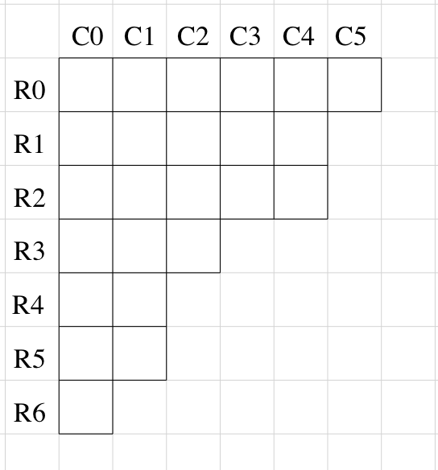

CRPM introduces partisan gameplay with player-specific restrictions:

Player A can select any of the R# in their move; whereas Player B, if it's their turn, can choose any C#. After each move, fragments - if there are any - gets merged.
Some research are already waiting on publication approval - please contact Prof. Gottlieb for related queries.